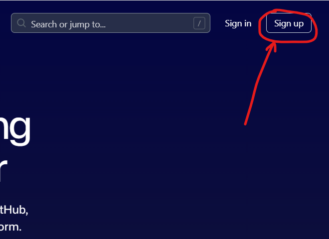
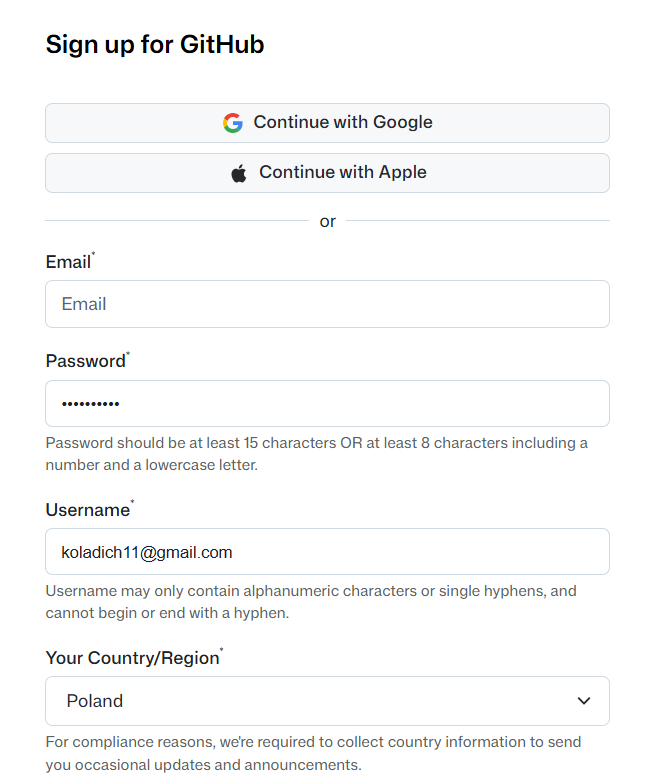
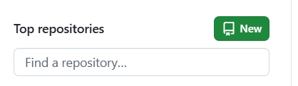
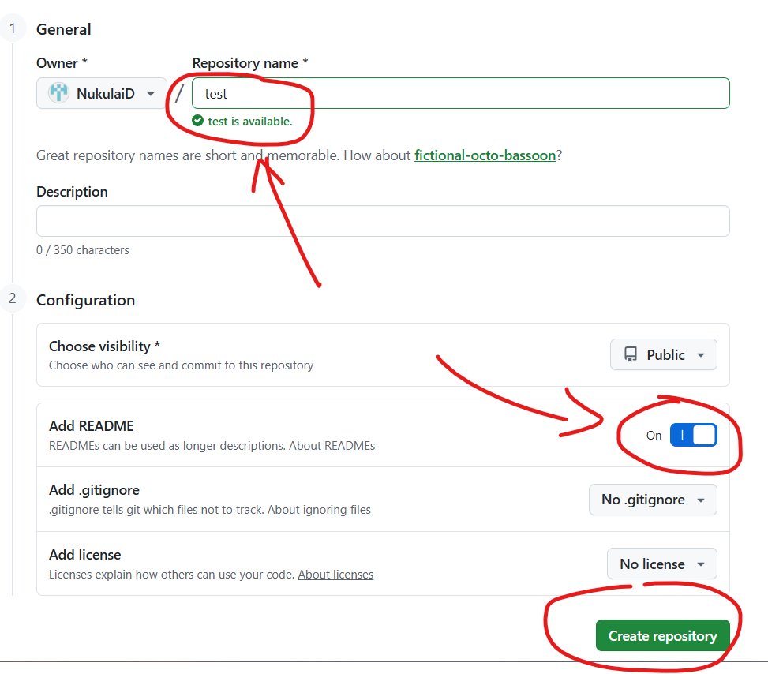
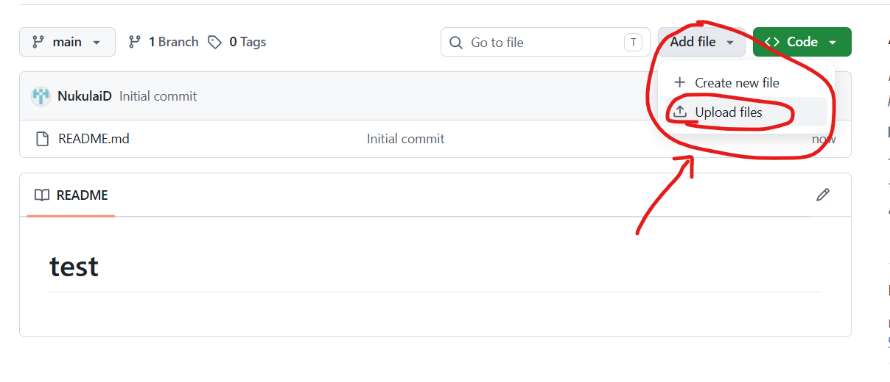
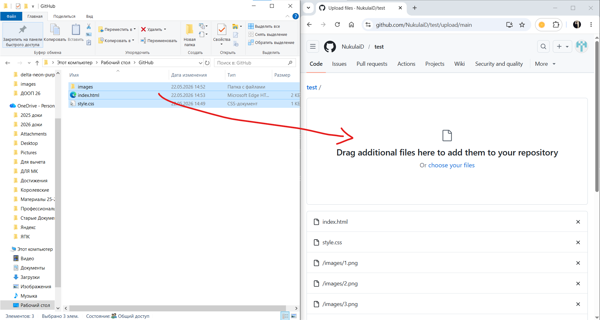
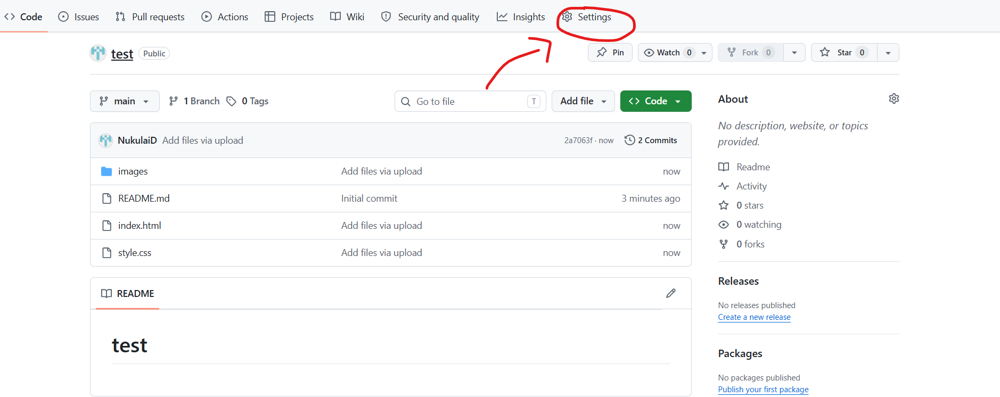
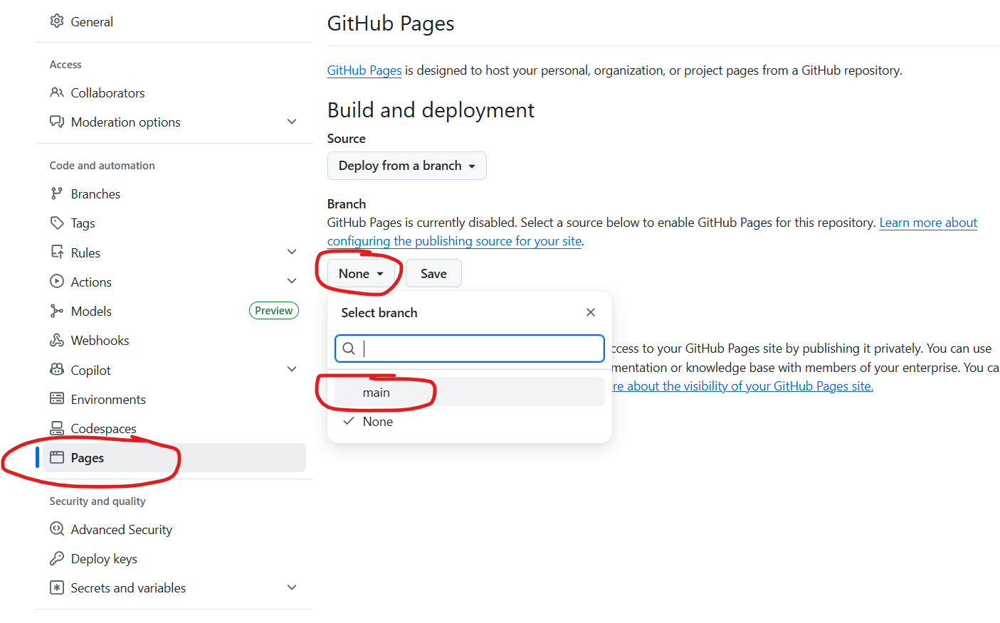
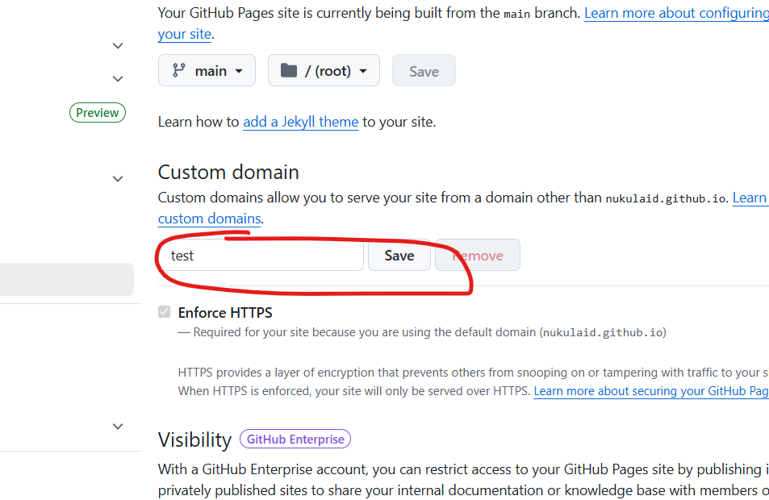
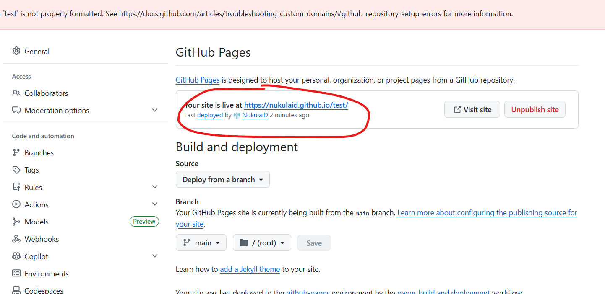

1. Открываем github.com

проходите регистраицю и потверждаете электронную почту

2. Нажимаете в левом верхнем углу зеленую кнопку create repository

3. Придумайте название сайта, поставьте галочку как указано и нажмите create repository

4. нажмите add file, потом upload files

5. перетащите все файлы и папки в поле и нажмите commit changes

6. перейдите в settings

7. найдите пункт pages, выберите в branch main, и нажмите save

8. в поле custom domain пропишите ваше название сайта которую вы называли в начале

и нажмите save, после этого выдаст ошибку нужно подождать 1-2 минуты
9. потом появится ссылка на ваш сайт
